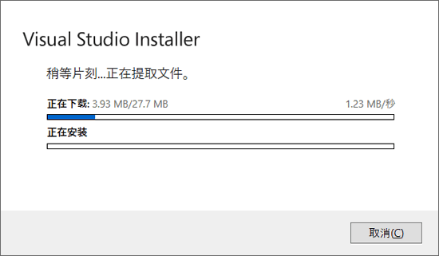
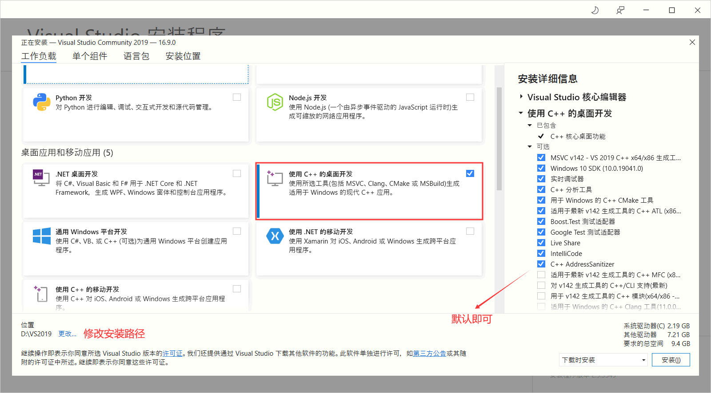
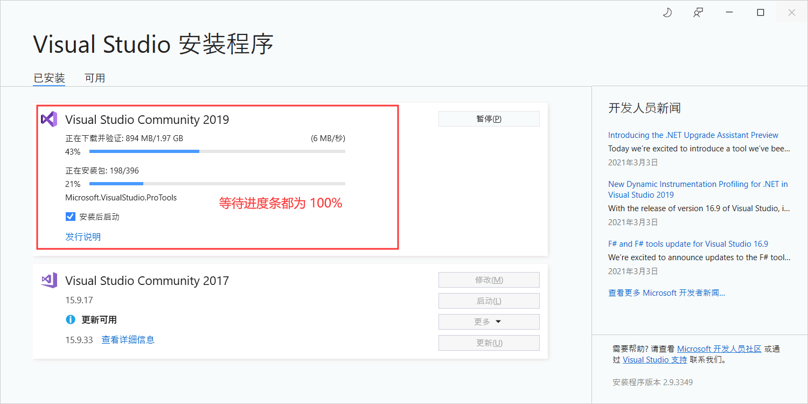
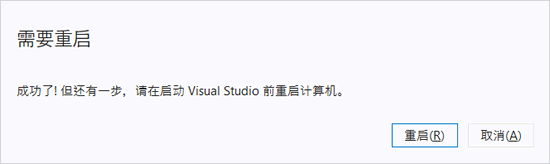
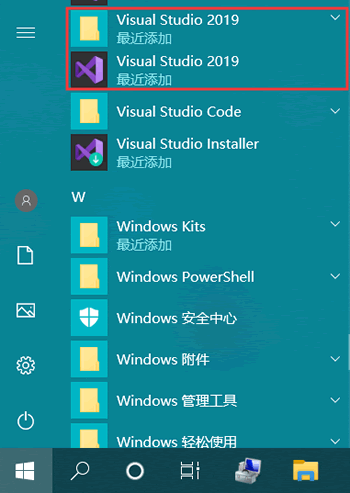
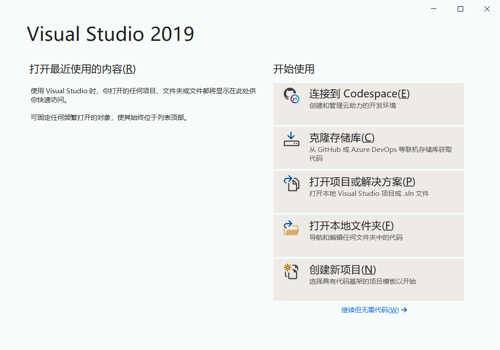

VS2019下载地址和安装教程（图解）
继 VS2015 和 VS2017 之后，微软于 2019 年 4 月 3 日发布了新版的集成开发环境——VS2019。
和 VS2017 相比，VS2019（Visual Studio 2019）更加强大，不仅新增了一键清除代码、利用实时协作开发共享代码等功能，还改进了 C++ 文件的 IntelliSense 性能、简化了解决方案资源管理器中的测试访问等。
和先前的版本一样，VS2019 也分为以下 3 个版本：
对于大部分程序开发，免费的社区版足以满足需求，所以我推荐大家使用社区版，既省去了破解的麻烦，也尊重微软的版权。
百度网盘：链接：https://pan.baidu.com/s/1VfPni3gWabjIMH1oaBEd6Q 提取码：gtmw

图 1 启动安装前的配置界面
点击“继续”，会进入如下界面：
待两个进度条全部达到 100% 后，会自行弹出如下界面：
VS 2019 除了支持 C/C++ 开发，还支持 C#、F#、Visual Basic 等开发语言，我们没有必要安装所有的组件，只需要安装 “使用C++ 的桌面开发” 即可。此外，您可以选择 VS 2019 的安装路径（例如笔者将其安装到 D 盘下的 VS2019 文件夹中），最终点击 "安装" 按钮，进入如图所示的界面：
耐心等待两个进度条全部为 100%，可能会弹出下面的窗口，提示我们“安装成功，需要重启计算机”，重启即可。
重新启动后进入“开始”菜单，会看到已安装好的 VS2019：
打开 VS 2019 会弹出如下界面：
由此，表明我们成功安装好了 VS2019。
和 VS2017 相比，VS2019（Visual Studio 2019）更加强大，不仅新增了一键清除代码、利用实时协作开发共享代码等功能，还改进了 C++ 文件的 IntelliSense 性能、简化了解决方案资源管理器中的测试访问等。
和先前的版本一样，VS2019 也分为以下 3 个版本：
- 社区版（Community）：免费提供给单个开发人员，给予初学者及大部分程序员支持，可以无任何经济负担、合法地使用。
- 企业版（Enterprise）：为正规企业量身定做，能够提供点对点的解决方案，充分满足企业的需求。企业版官方售价 250美元/月。
- 专业版（Professional）：适用于专业用户或者小型团体。虽没有企业版全面的功能，但相比于免费的社区版，有更强大的功能。专业版官方售价 45美元/月。
对于大部分程序开发，免费的社区版足以满足需求，所以我推荐大家使用社区版，既省去了破解的麻烦，也尊重微软的版权。
下载VS2019
VS2019社区版下载地址：百度网盘：链接：https://pan.baidu.com/s/1VfPni3gWabjIMH1oaBEd6Q 提取码：gtmw
该文件仅 1.39 MB，是 VS 2019 Community 简体中文版的一个安装引导程序，启动后勾选需要的组建即可进行在线下载安装。
安装VS2019
下载 VS2019 会得到一个名为 "vs2019_community" 的可执行文件，双击打开它，会弹出如下界面：图 1 启动安装前的配置界面
点击“继续”，会进入如下界面：

图 2 下载和安装必要的配置文件
图 2 下载和安装必要的配置文件
待两个进度条全部达到 100% 后，会自行弹出如下界面：

图 3 安装配置界面
图 3 安装配置界面
VS 2019 除了支持 C/C++ 开发，还支持 C#、F#、Visual Basic 等开发语言，我们没有必要安装所有的组件，只需要安装 “使用C++ 的桌面开发” 即可。此外，您可以选择 VS 2019 的安装路径（例如笔者将其安装到 D 盘下的 VS2019 文件夹中），最终点击 "安装" 按钮，进入如图所示的界面：

图 4 下载并安装 VS2019
图 4 下载并安装 VS2019
耐心等待两个进度条全部为 100%，可能会弹出下面的窗口，提示我们“安装成功，需要重启计算机”，重启即可。

图 5 安装成功，重新启动提示界面
图 5 安装成功，重新启动提示界面
重新启动后进入“开始”菜单，会看到已安装好的 VS2019：

图 6 安装好的 VS 2019
图 6 安装好的 VS 2019
打开 VS 2019 会弹出如下界面：

图 7 打开 VS 2019
图 7 打开 VS 2019
由此，表明我们成功安装好了 VS2019。
关注公众号「站长严长生」，在手机上阅读所有教程，随时随地都能学习。内含一款搜索神器，免费下载全网书籍和视频。

微信扫码关注公众号